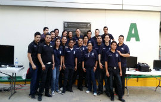

Coordinador de Carrera
M.A. Elda Areli Luque
 Misión
Misión
Formar profesionales analíticos, críticos y propositivos, capaces ce tomar decisiones con visión, liderazgo, valores y conciencia turística. Generar y divulgar conocimientos, vincularse con los sectores social y productivo que permita participar en la promoción de los recursos naturales, culturales e históricos, bajo el esquema de sustentabilidad para el desarrollo y consolidación económica del turismo.
Campo Ocupacional
Sector público y privado:
El Licenciado en Gestión Turística podrá en empresas y organismos vinculados con el sector turístico,en actividades de gestión, planeación y dirección que permitan rentabilizar los recursos de la organización.
Independiente
Como profesional independiente ofreciendo sus servicios en forma particular,como en consultorías y asesorías para la gestión y administración de empresas,así como organización de eventos.
Perfil de Ingreso
El aspirante al ingresar a la Licenciatura en Gestión Turística debe de poseer las siguientes características:
Conocimientos:
Económico-administrativa, matemáticas, ciencias sociales, inglésHabilidades:
Comunicación oral y escrita, manejo de equipo de cómputo, resolver problemas prácticos, análisis y síntesis, crear e innovar, proponer y tomar decisiones.Actitudes:
Trabajo en equipo, emprendedor, espíritu de servicio, responsable, dinámico, tolerancia a la diversidad de opiniones, compromiso social, iniciativa, respeto al medio ambiente, apertura y respeto a la cultura nacional y a otras culturas.Perfil de Egreso
 El Licenciado en turismo es el profesionista competente para diseñar programas y estrategias de desarrollo con fundamentos teóricos y prácticos, valorando el patrimonio turístico nacional e internacional para su aprovechamiento racional, respetando el entorno y la cultura, tomando como referencia políticas nacionales e internacionales.
• Diseñar programas para promover los recursos naturales y culturales del país con respeto a las tradiciones y costumbres, integrándose en grupos multidisciplinarios.
• Evaluar el impacto del desarrollo turístico en el medio ambiente, para diseñar estrategias que permitan su preservación y rescate, respetando las regulaciones legales aplicables.
• Diseñar estrategias que atiendan las necesidades del desarrollo turístico, tomando en cuenta la planificación turística nacional e internacional, para identificar oportunidades de desarrollo en el área, con sentido de compromiso social.
• Analizar los fundamentos teóricos y prácticos del turismo para generar propuestas que impulsen el desarrollo de su quehacer profesional con rigor metodológico y sentido de pertenencia.
• Realizar con apego a las metodologías la operación de programas de mercadotecnia turística, incorporándose a grupos multidisciplinarios, considerando el impulso de desarrollo económico y social del país.
• Aplicar los conceptos y principios básicos del proceso administrativo en áreas funcionales de las empresas y organismos turísticos, incorporándose a grupos multidisciplinarios para contribuir a la operación eficiente de las mismas